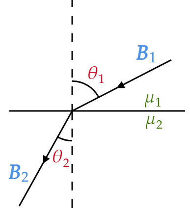

At the interface between one linear magnetic material and another, the magnetic field lines bend (Fig. 6.32).
Show that
\[\frac{\tan \theta _2 }{\tan \theta _1 }=\frac{\mu _2 }{\mu _1} \]Assuming there is no free current at the boundary. Compare Eq. 4.68.
Recall from section 6.3.3 "Boundary conditions" that the perpendicular components of $\mathbf{B} $ at the interface are continuous:
\[B^{\perp}_{\text{above} }-B^{\perp}_{\text{below} }=0\tag{Eq. 6.26} \]And the parallel components of $\mathbf{H} $ are continuous in the absence of surface current:
\begin{align*} \mathbf{H}^{\parallel}_{\text{above} }-\mathbf{H}^{\parallel}_{\text{below} } &= \cancel{\mathbf{K}_f}\times \hat{n} \\ &= \mathbf{0} \end{align*}In other words, we have:
\begin{align*} B_1 ^{\perp} &= B_2 ^{\perp} \\ \mathbf{H}_1 ^{\parallel} &= \mathbf{H}_2 ^{\parallel} \end{align*}Now, recall that
\[\mathbf{B}=\mu \mathbf{H} \](where $\mu = \mu _0 (1+\chi _m)$) So
\begin{align*} \mathbf{H}_1 ^{\parallel} &= \mathbf{H}_2 ^{\parallel} \\ \Rightarrow \;\;\;\frac{1}{\mu _1 }\mathbf{B}_1 ^{\parallel} &= \frac{1}{\mu _2 }\mathbf{B}_2 ^{\parallel} \end{align*}By (geometric) definition of tangent, we have:
\[\tan \theta _1 =\frac{B^{\parallel}_1 }{B^{\perp}_1 }\]And
\[\tan \theta _2 =\frac{B^{\parallel}_2 }{B^{\perp}_2 }\]So
\begin{align*} \frac{\tan \theta _2 }{\tan \theta _1 } &= \frac{B^{\parallel}_2 }{B^{\perp}_2 }\frac{1}{\frac{B^{\parallel}_1 }{B^{\perp}_1 }} \\ &= \frac{B^{\parallel}_2 }{B^{\perp}_2 } \frac{B^{\perp}_1 }{B^{\parallel}_1 }\\ &= \frac{B^{\parallel}_2 }{\cancel{B^{\perp}_2} } \frac{\cancel{B^{\perp}_1} }{B^{\parallel}_1 }\tag{By boundary condition}\\ &= \frac{B^{\parallel}_2 }{B^{\parallel}_1 } \\ &= \frac{\mu _2 }{\mu _1 } \end{align*}